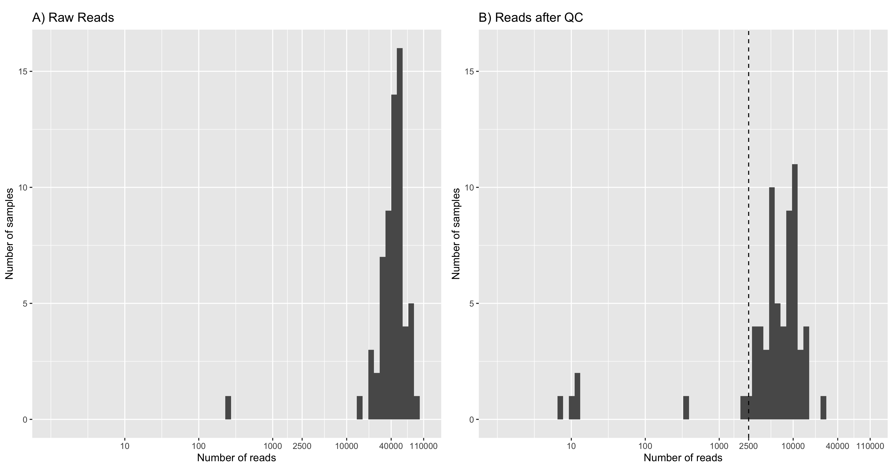
6 Results
1 Mock scenarios
1.1 Quality control
After quality control, there was considerable read loss across the fungal taxa used to construct the mock scenarios (Table A2). A minimum of 2,500 reads per taxa was required to construct even-abundance mock scenarios with library sizes nearing 150K reads (\(58 \text{ taxa} \times 2500 \text{ reads} = 145000\text{ reads}\)). This can be seen in Figure 1, where seven samples are excluded.
Tracking read counts at each stage of the workflow has shown that the majority of reads were lost in the primer trimming and quality filtering stages of the workflow (Figure 2). An average of 32.37% of reads were lost across samples after applying cutadapt to select and trim amplicons that contain both forward (ITS1F) and reverse primer (LR3) sequences. The extraction of the full ITS region led to an average loss of 10.65% trimmed reads across samples. An average of 71.82% of full ITS sequences were lost after selecting reads between 300-6,000bp in length and having a mean quality score above Q20 (Phred scale). Such large loss of reads can be attributed to many of the reads from the dataset being below the minimum mean quality threshold of Q20 (Figure 3).
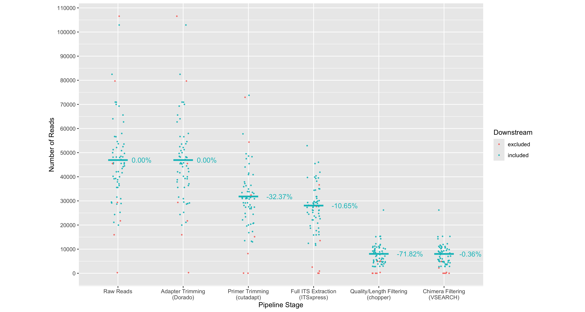
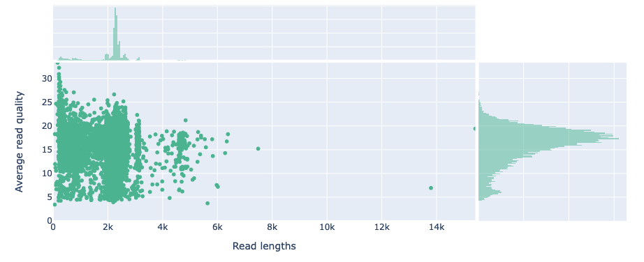
1.2 Even abundance scenario
Minimum cluster size threshold to recover the expected number of species
The adopted clustering approaches aimed to group full ITS sequences from the same species together in the same OTU. The total number of OTUs was used as a measure for successfully estimating the number of species in the mock community. In this section we considered the even abundance mock community where 58 fungal taxa were equally represented (Section 5.2). Of the 58 taxa, some had the same species-level designation making for a total of 55 unique species.
Two clustering approaches were tested: a greedy sequence similarity-based clustering approach with VSEARCH and a k-mer signature based clustering approach (as implemented in NanoCLUST). To recover the expected number of species from the mock community, both clustering approaches required a technique to filter out low-abundance OTUs.
The number of OTUs returned by VSEARCH at 97% sequence identity was consistently larger than the actual number of species present in the mock community. VSEARCH significantly over-estimated the number of species in the mock community when no filtering was applied to the resulting set of OTUs. Furthermore, this over-estimation was exacerbated as the library size increased. As a significant proportion of these OTUs had low abundance, to recover the expected number of species in the mock community, we implemented a crude cutoff which removed OTUs below a minimum size. We set the cutoff to a proportion of the total library size and tested values between 0% and 2% (Figure 4). We repeated the test for 6 different library sizes (1,160; 2,900; 9,686; 58,000; 116,000; and 145,000 reads) where all fungal taxa had equal abundances.
With VSEARCH, we observed consistent behaviour when applying the minimum OTU size cutoff at all library sizes. The number of OTUs was very high without a minimum OTU size cutoff, then decreased and stabilised near the expected number of species as the OTU size cutoff increased. We observed that setting the minimum OTU size to be 0.15% of the library size consistently recovered the expected number of species.
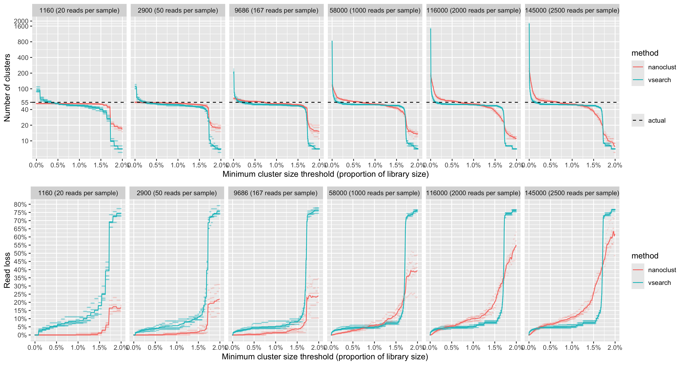
Alternatively, we tested the k-mer based clustering approach used by the NanoCLUST pipeline. Within the NanoCLUST pipeline, HDBSCAN is the algorithm that performs the clustering and requires specifying a minimum cluster size parameter a priori. Similar to our approach with VSEARCH, we tested multiple values of HDBSCAN’s minimum cluster size parameter on the even abundance mock community for 6 different library sizes (1,160; 2,900; 9,686; 58,000; 116,000; and 145,000 reads). We tested a range of minimum cluster sizes between 0% and 2% of the total library size. We found that when the minimum cluster size parameter was set to its minimum value (2 reads), the NanoCLUST method overestimated the number of species for library sizes of 1,160 reads and above. With the minimum cluster size parameter set to 2, the number of OTUs showed a positive correlation with library size but not as dramatically as with VSEARCH. For library sizes of 1,160 reads and above, a minimum cluster size of 0.65% of the total library size consistently recovered the expected number of species.
To aid the comparison of VSEARCH and NanoCLUST clustering methods, we recorded the proportion of reads that were lost due to defining a minimum OTU size. We defined the proportion of reads lost for VSEARCH as:
\[ \frac{\text{\# of reads removed when filtering OTUs by size}}{\text{\# number of reads in library}} \]
and for Nanoclust as:
\[ \frac{\text{\# of unclustered reads}}{\text{\# number of reads in library}} \]
We found that for low library sizes (1,160-9,686 reads), the NanoCLUST method produced closer estimates of the actual number of species with lower read loss than VSEARCH for all minimum OTU sizes. For larger library sizes (58K-145K reads) using the VSEARCH method, we observed a consistent pattern of read loss for all library sizes. The NanoCLUST method became less consistent for larger library sizes and lost a higher proportion reads to recover the same number of species as VSEARCH (Figure 4).
Computing number of species after taxonomic assignments
While we were able to demonstrate above that the expected number of species can be recovered by setting a minimum OTU size, the number of OTUs may not be an accurate measure of the actual number of species. For example, one species may have been split into multiple OTUs which have all been given the same species-level taxonomic assignment. In addition, we wanted to explore using a minimum OTU size threshold that was not proportional to the library size. We felt that a minimum OTU size of 0.65% for NanoCLUST and 0.15% for VSEARCH would exclude low-abundance species and may bias against samples with low read depth.
Here we explored the observed number of species in our even abundance mock community after assigning OTUs. We performed VSEARCH and NanoCLUST clustering methods on four library sizes of 9,686; 58,000; 116,000 and 145,000 reads. HDBSCAN clustering was performed six times for each library with minimum cluster sizes of: 2, 5, 10, 20, 50 and 100 reads. VSEARCH clustering was performed once for each library at 97% identity, then OTUs with fewer than: 2, 5, 10, 20, 50 and 100 reads were removed. The most abundant sequence was used at the representative sequence for each OTU and given a taxonomic assignment with dnabarcoder using the UNITE+INSD 2024 database.
For each minimum OTU size, we counted the number of unique taxonomic assignments given at the species level. Of the OTUs that were given a species-level assignment, we counted the number of species that were known to be in the mock community (listed in Table A2). For OTUs that were only identified to genus or family level, we counted the number of OTUs that had genus or family level labels that were known to be in the mock community. OTUs that were identified at species, genus or family levels but whose taxonomic labels were not expected in the mock community were counted as false positives. OTUs that were unidentified at the family level or higher were recorded as ‘unidentified’ (Figure 5). We also recorded the proportion of read loss as in the previous section.
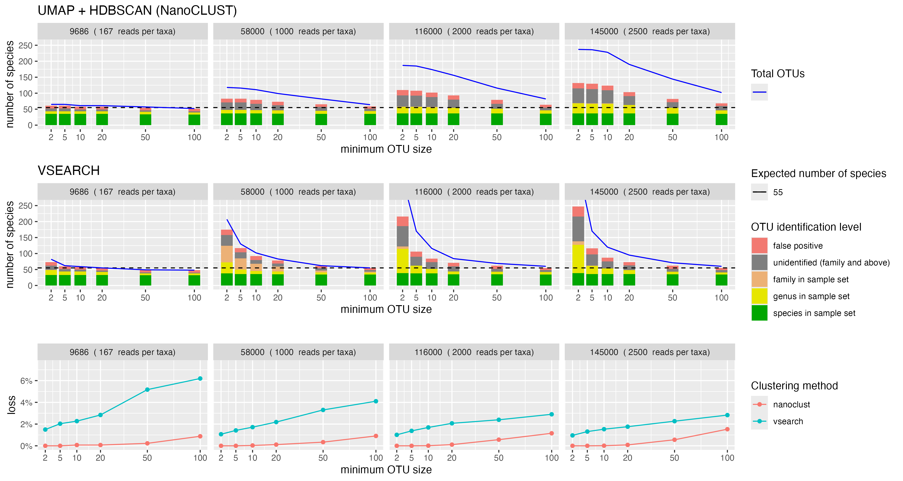
We observed that ‘collapsing’ OTUs by their species-level identification was more accurate in estimating the number of species in the mock community compared to using the number OTUs. We found that a core set of species from the mock community remained regardless of minimum OTU size or library size (green bars in Figure 5). When the library size increased, we observed an increase in OTUs that were unidentified or assigned to the expected genus and family levels for both NanoCLUST and VSEARCH. Increasing the minimum OTU size with VSEARCH mostly removed OTUs that were unidentified or assigned to genera from the mock community. NanoCLUST overestimated the number of species regardless of the minimum OTU size, but had the benefit of much lower read loss than VSEARCH.
Comparing cluster delineation between VSEARCH and NanoCLUST
To investigate if closely related species could be distinguished after clustering, we looked at a single execution of the even abundance mock scenario where 2,000 reads were selected from each of the 58 fungal taxa giving a total library size of 116K reads. Reads were clustered separately with the NanoCLUST and VSEARCH methods. Reads that were clustered with the NanoCLUST method used a minimum cluster size of 580 reads (0.5% of the library size). VSEARCH clustering used a 97% identity and OTUs that had fewer than 174 reads (0.15% of library size) were removed. The most abundant sequences of each OTU were classified with dnabarcoder and the UNITE+INSD 2024 reference database.
The samples from the order Pucciniales are shown in Figure 6. Using the NanoCLUST method, the majority of reads from the Puccinia striiformis (var tritici) sample (BC 25) clustered together into a single OTU (OTU 37) with the expected species-level classification (Puccinia striiformis). The remaining reads from the P. striiformis (var tritici) sample clustered into singleton OTUs which did not correspond to the expected taxonomic label. The Botrytis classification of one of these OTUs corresponds to another fungal taxa present in the library and may be indicative of index-switching (where a sequencing error has occurred in the barcode region of the read).
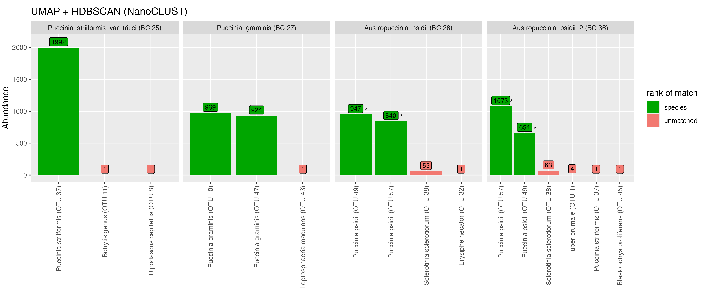
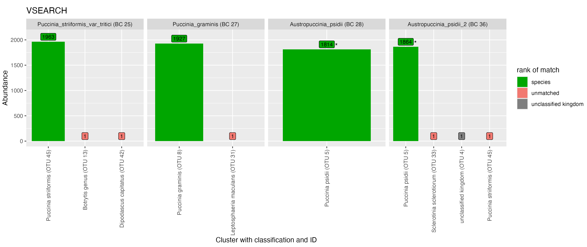
For Puccinia graminis (BC 27) when using the NanoCLUST method, the majority of the reads were split into two OTUs, both of which were classified as the expected P. graminis species. Using the VSEARCH method, the majority of the Puccinia graminis reads clustered into a single correctly identified OTU. This likely indicates that biological variation exists in the P. graminis sample that the NanoCLUST method was capable of detecting while VSEARCH (at 97% identity) could not. The majority of reads for both Austropuccinia psidii samples (BC 28 and 36) were split into the same two OTUs (OTU 38 and 21) which have been classified as Puccinia psidii. A similar plot for all samples in this mock community can be seen in Figure A1 with classifications shown in Table A4.
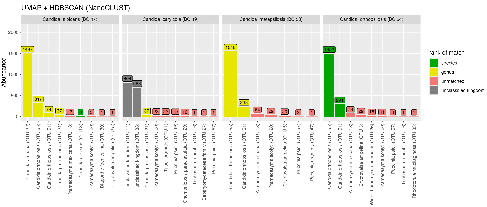
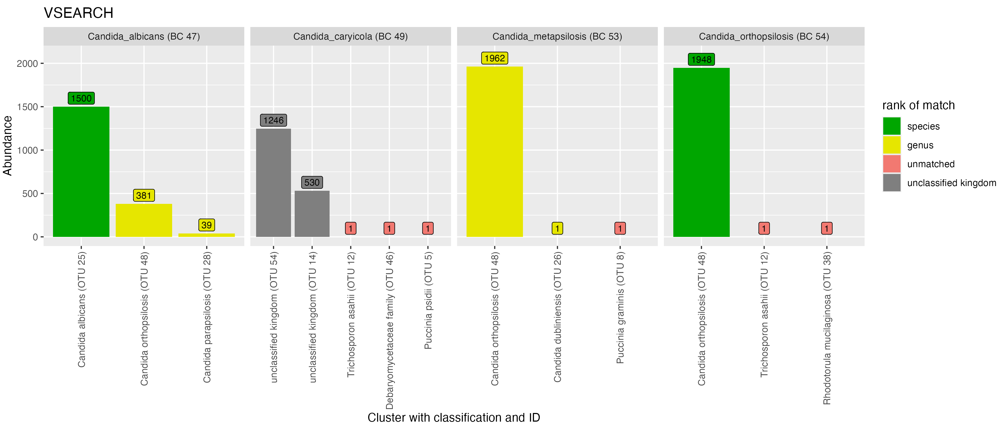
We observed similar clustering behaviour between VSEARCH and NanoCLUST for taxa in the genus Candida (Figure 7). With VSEARCH, sequences from C. albicans (BC47) were placed into three OTUs. The OTU that received the most reads from C. albicans was classified correctly, while the other two were classified to other taxa in the mock community (C. orthopsilosis and C. metapsilosis). A similar pattern was observed using NanoCLUST, although the major OTU was not classified correctly at the species-level and there were many more low-abundance OTUs (below 40 reads). The majority of sequences from C. caryicola (BC49) were placed into two unclassified OTUs for both clustering methods. Sequences from C. metapsilosis (BC53) and C. orthopsilosis (BC54) showed significant similarity as VSEARCH placed the majority of reads from both taxa in the same OTU, while NanoCLUST placed a similar proportion of reads from each taxon into two major OTUs.
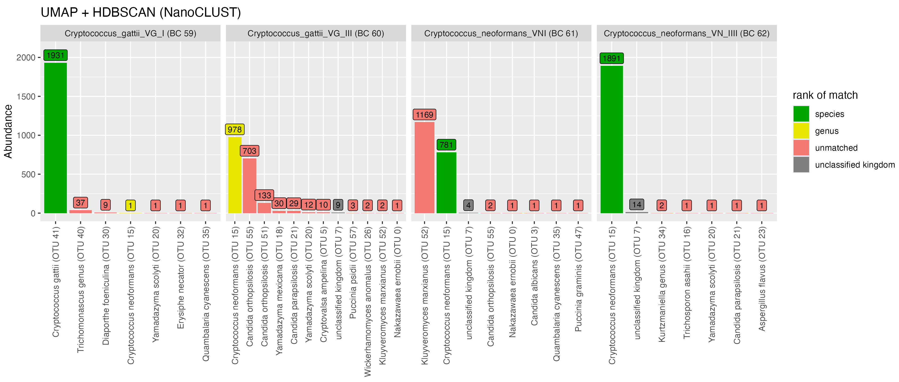
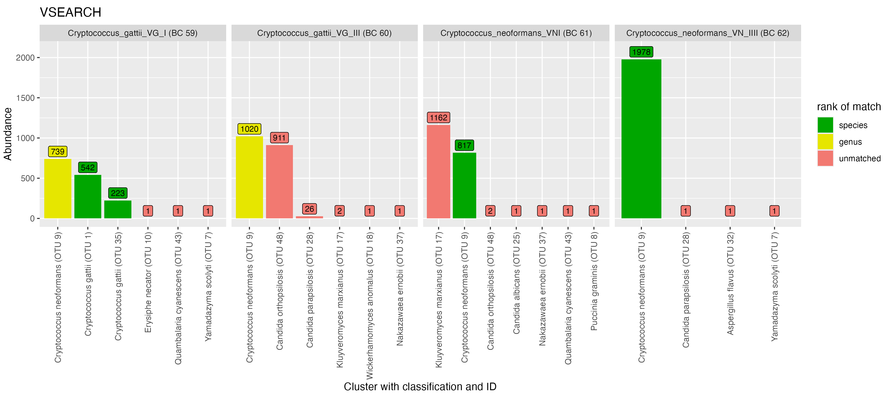
In the genus Cryptococcus, with NanoCLUST, reads from C. gattii VG I (BC59) were placed into one major OTU with the correct species-level assignment while VSEARCH split reads into three major OTUs (Figure 8). With VSEARCH, we observed a significant proportion of reads from all four Cryptococcus taxa were placed into the same OTU (OTU 9), while with NanoCLUST this only occurred for three of the taxa (C. gattii VG III (BC60), C. neoformans VNI (BC61) and C. neoformans VN IV (BC62)). A proportion of reads from Cryptococcus gatii VG III (BC60) were misclassified as Candida ortholopsis, while a proportion of reads from Cryptococcus neoformans VNI (BC61) were misclassified as Kluveromyces marxianus.
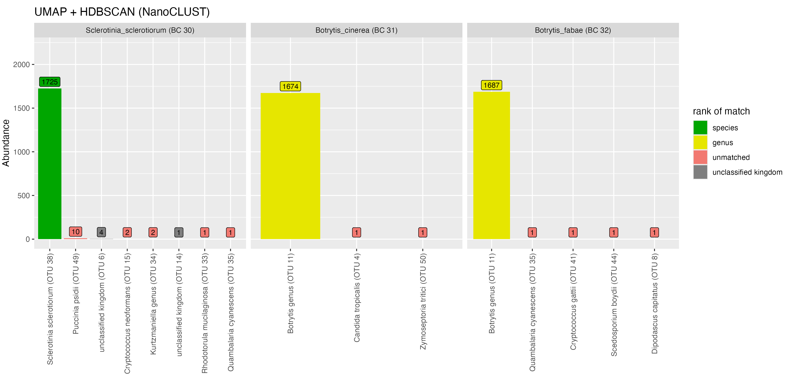
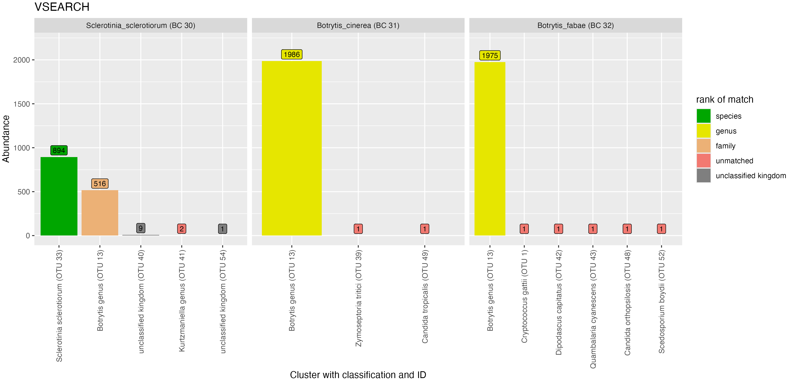
For the Sclerotiniaceae family, we found that both Botrytis taxa (BC31 and BC32) were placed in the same OTU with both NanoCLUST and VSEARCH. With VSEARCH, 516 reads from Sclerotinia sclerotiorum were also placed in the same OTU with the Botrytis taxa. With NanoCLUST, the majority of reads were placed into one correctly identified OTU.
Overall, with these clustering setting, NanoCLUST and VSEARCH performed similarly for delineating the majority of the taxa. In the Cryptococcus and Sclerotiniaceae cases, NanoCLUST was observed to perform better at delineating closely related taxa. However, in Candida and Cryptococcus cases, we observed many more low-abundance OTUs with incorrect taxonomic assignments for NanoCLUST compared to VSEARCH.
Comparison of representative sequence used for taxonomic assignment
To explore the accuracy of taxonomic classifications made by the workflow, two metrics were computed for the even abundance mock scenario (Scenario 1). The genera classification proportion metric for all fungal taxa was defined as:
\[ \frac{\text{\# of reads classified at the genera level}}{\text{total \# of reads in library}} \]
The genera precision metric for all fungal taxa was defined as:
\[ \frac{\text{\# of reads classified correctly at the genera level}}{\text{\# of reads classified at the genera level}} \]
These metrics were calculated for five library sizes (between 2,900 and 145,000 reads) for both NanoCLUST and VSEARCH clustering methods (Figure 10). We explored which representative sequence from an OTU gave more accurate taxonomic classifications: most abundant sequence or consensus sequence. Consensus sequences were generated by polishing a subset of sequences from each OTU as described in Section 5.1.
A read’s classification was deemed ‘correct’ if its genus-level label matched the sample from which the read originated. This approach had limitations and was difficult to ensure taxonomic assignments were correct in an automated fashion due to synonymous naming conventions. Manual adjustments were made for the following assignments that would have been otherwise considered misclassified:
- Reads classified as Puccinia psidii from the Austropuccinia psidii sample were considered to be a correct species-level assignment.
- Reads classified to the Kurtzmaniella genus from the Candida boleticola or Candida zeylanoides samples were considered to be correct genus-level assignment.
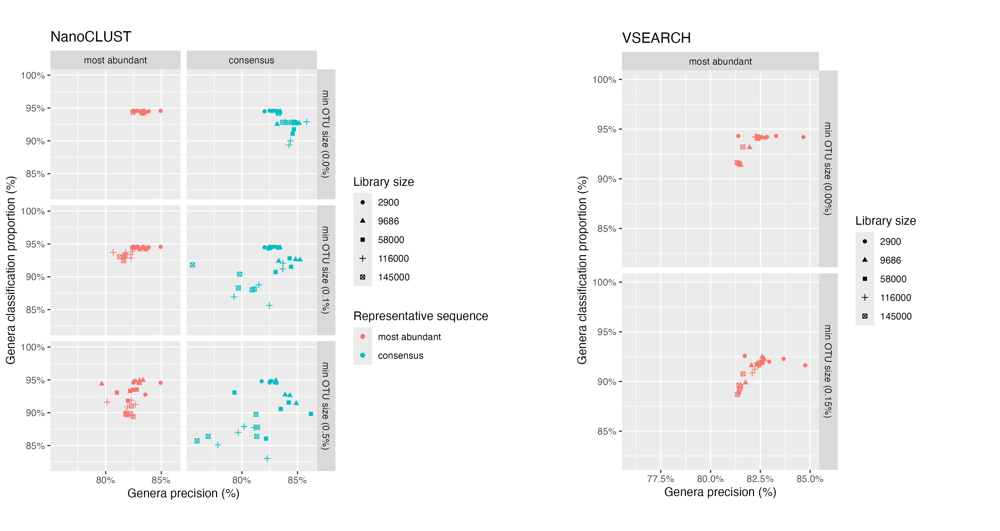
For NanoCLUST, we observed that clustering with a min_cluster_size of 2 and classifying the most abundant sequence gave the most consistent results across all library sizes. In this case, for all library sizes, ~95% of reads were classified and 82.5% to 85% of these classifications were correct. We observed that increasing the min_cluster_size parameter introduced variability in these metrics and generally worsened classification performance. When clustering with a min_cluster_size parameter of 2 and using the consensus sequence for classifications, the classification precision improved slightly while the proportion of reads that were classified decreased.
For VSEARCH when using the most abundant sequence, we observed that increasing the minimum OTU size decreased the proportion of reads classified at the genera level by ~2.5% while the classification precision did not change significantly. The classification rate of consensus sequences for VSEARCH was very poor with more than 65% of reads being unclassified at the genera level. Overall, both NanoCLUST and VSEARCH approaches performed comparably when the minimum OTU size was low and the most abundant sequence was used for classifications.
1.3 Uneven abundance Scenario
Sensitivity of cluster thresholds in uneven abundance scenarios
To explore the impact that a minimum OTU size cutoff might have on rare species in a real environmental sample, we created a mock scenario where a subset of fungal taxa had much lower abundance than others. This mock community contained a total of 55 fungal taxa where 50 taxa each had an abundance of 2,000 reads, while the remaining five taxa had abundances of 5, 10, 20, 50 and 100 reads, making for a total library size of 100,185 reads. We examined the minimum OTU size cutoff at which low-abundance taxa would be lost (Figure 11).
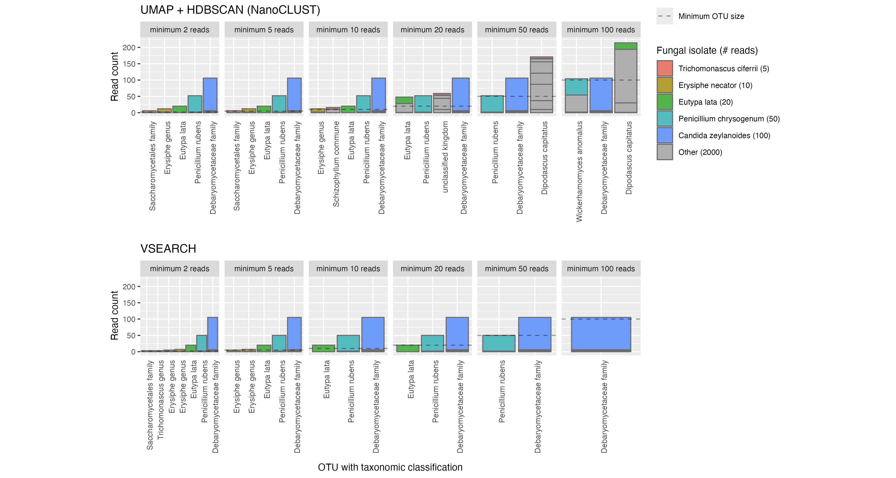
We observed that when increasing the min_cluster_size parameter for HDBSCAN (the clustering algorithm used by NanoCLUST), reads from ‘low-abundance’ fungal taxa were placed in OTUs with unrelated taxa. For example in Figure 11, when setting the min_cluster_size to 100 reads, we see that reads from Eutypa lata were clustered together into an OTU which was classified as the distantly related Dipodascus capitatus. This behaviour was consistent when the min_cluster_size parameter exceeded the abundance of a fungal taxon.
For VSEARCH, the effect of a minimum OTU size was predictable in removing low-abundance OTUs. Low-abundance taxa such as Trichomanascus ciferri and Erysiphe necator were lost at lower minimum OTU sizes than expected because they had been split into smaller OTUs.
2 Real world - Soil case study
For our ‘real world’ soil study, 23 samples were taken from soil beneath six tree species and two controls were sequenced with ONT MinION 10.4.1 and gave a total of 4,365,488 reads after basecalling. After demultiplexing with minibar using a custom barcoding scheme, 3,041,450 reads remained (30% loss). Of the reads where demultiplexing failed, 88,599 reads had multiple barcode matches and 1,235,439 had unidentifiable barcodes.
2.1 Quality control
We observed considerably higher read quality scores from the soil samples (median: Q24.0) compared to the pure fungal taxa (median: Q16.8) used in the mock scenarios (compare Figure 12 and Figure 3). This was expected, as the soil samples were sequenced with the latest MinION chemistry and basecalled with the dorado’s latest basecalling model (v5.0.0), while the pure fungal taxa were limited to older basecalling models (v4.1.0).
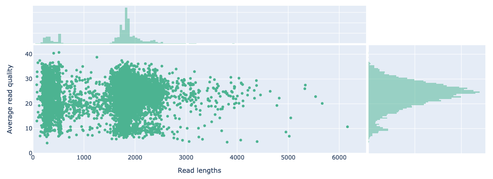
After tracking the number of reads through the primer trimming, ITS extraction, quality filtering and chimera detection stages of the workflow, we observed a mean read loss across all samples of 14.85%, 15.56%, 12.26% and 0% respectively (Figure 13). We observed considerably more reads being retained after the primer trimming step for the soil samples as compared to the mock fungal samples (14.85% loss vs. 32.37% loss), which is likely due to the higher read quality but also due to the demultiplexing approach having already detected and filtered reads that did not match the amplicon primers. We also noted that the extraction kit (ExCon) and PCR negative control had a relatively low number of reads as expected after these stages. The sample AP6 was excluded from further processing due to having a significantly lower read count (1,173) compared to the other samples.
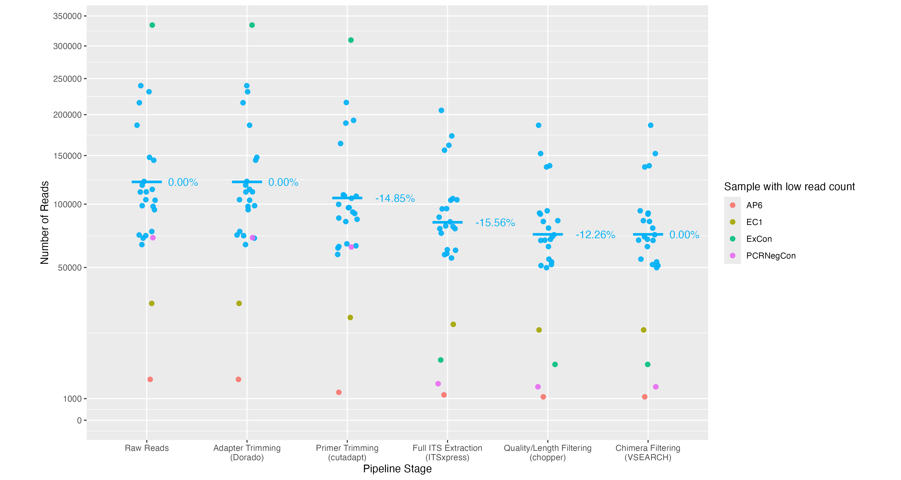
2.2 Clustering and taxonomic assignment
The full set of quality filtered reads were clustered with VSEARCH at 97% identity and the most abundant sequence of each OTU was classified using dnabarcoder and the UNITE+INSD 2024 database. Low-abundance OTUs were removed from samples if they were smaller than 0.15% of the number of reads in the sample. The top 30 largest OTUS can be seen in Table A8. A high proportion of OTUs could not be given a classification by dnabarcoder. 71.7% of 1,590,965 reads were considered unclassified at the kingdom level consisting of 451 out of 775 OTUs (Figure 14).
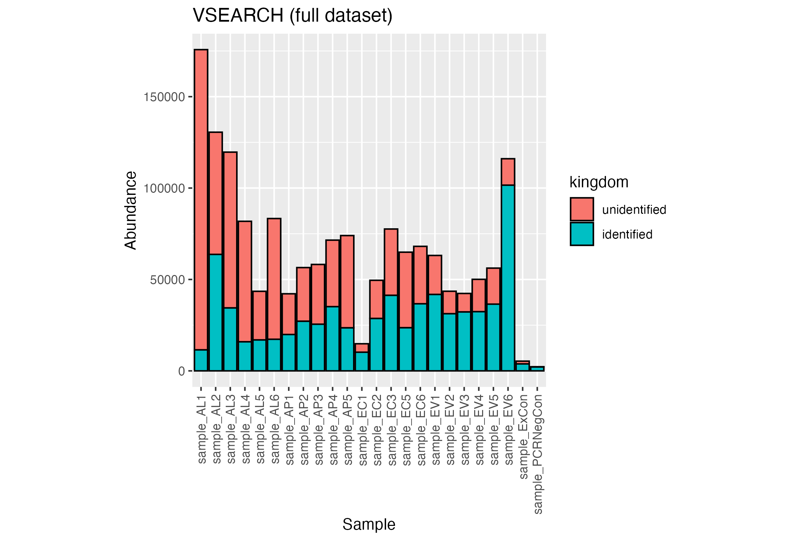
The classifications by tree species are shown in Figure 16 and Figure 18 and show a higher proportion of fungi are classified in Eucalyptus species compared to Allocasuarina.